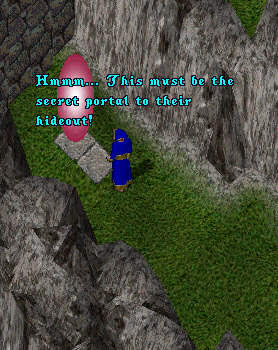
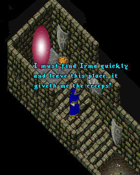
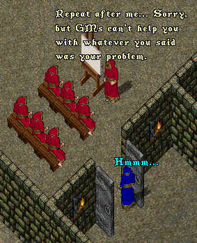
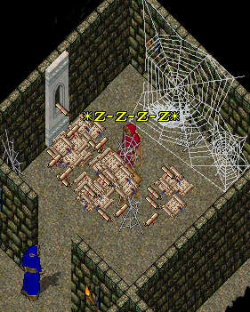
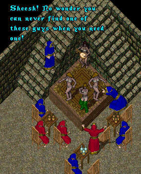
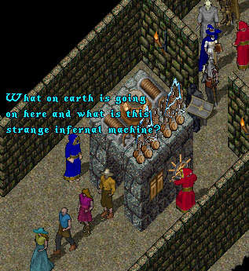

Episode 66: Desperately Seeking Irma (Part 2). Having tortured the whereabouts of the mysterious blue and red robed cult's headquarters from one of their members, ImaNewbie sets out in search of Irma disguised as one of them...and discovers more than he has bargained for. If you missed Part 1 click HERE before reading this one!


Winding his way through the labyrinth of underground
tunnels ImaNewbie stumbles upon some of the red-robed
high priests engaged in some sort of training seminar.

Continuing his journey ImaNewbie comes upon the very nerve
center of the cult. The place where messages from the above
ground dwellers arrive and are promply processed.

ImaNewbie keeps searching, only to find some sort of
recreational area crowded with cult members.

Hearing strange grinding and crackling noises Ima follows
the sounds until he makes a startling discovery!
